EDUCATION & GRADUATE SCHOOL
Join Us!
教育・大学院への参加
血液腫瘍学・感染症・検査医学のフロンティアを、ともに切り拓きませんか。臨床検査医学分野は、東京科学大学の複数の大学院・専攻を通じて、様々なバックグラウンドを持つ学生・研究者を受け入れています。基礎研究から臨床応用まで幅広い研究環境で、次世代の研究者・臨床家を育成します。
学部生の方へ For Undergraduate Students
卒業研究・学外実習・研究室見学を随時受け付けています。
血液悪性腫瘍の研究や臨床検査医学に興味のある学部生の方は、まずはお気軽にご連絡ください。
DEPT.
東京科学大学 医学部 医学科
医学部生の研究室配属・卒業論文研究として当分野への参加が可能です。臨床実習との両立もサポートします。研究に興味のある医学部生は担当教員までご連絡ください。
東京科学大学 医学部 公式サイト大学院への進学経路 Graduate School Admission
当研究分野には、以下の大学院・専攻を通じて進学することができます。
それぞれの募集要項・選考方法については各専攻の公式サイトをご確認ください。
-
修士課程
東京科学大学大学院
医学系研究科（修士）臨床検査医学分野が所属する大学院研究科です。医学・歯学・生命科学分野の高度専門人材を育成します。社会人入試・編入学にも対応しています。
修士課程 医歯理工保健学専攻 -
博士課程
東京科学大学大学院
医学系研究科（博士）基礎医学・臨床医学を横断した研究を推進する博士課程プログラムです。国内外の学術機関・医療機関とのネットワークを活かした研究が可能です。
博士課程 医歯学専攻
研究室の教育方針 Our Educational Philosophy
当研究室では、自立した研究者・臨床家を育てることを目標に、以下の3点を重視した教育を行っています。
-
01
自律的な研究姿勢
自らテーマを設定し、仮説を立て、検証する力を養います。週次ミーティングと個別指導で研究の進め方を丁寧にサポートします。
-
02
国際的な発信力
国内外の学会発表・英語論文執筆を積極的に支援します。MDアンダーソン癌センターとの国際連携により、グローバルな研究ネットワークを構築できます。
-
03
臨床と研究の融合
臨床検査医学の視点から、患者さんに直結する研究テーマに取り組みます。基礎と臨床を橋渡しするトランスレーショナルリサーチを推進します。
FAQ よくある質問
- 医学部以外の出身でも参加できますか？
- はい、歓迎します。理学・薬学・工学・生命科学など様々なバックグラウンドの学生が在籍しています。研究への意欲が最も重要です。
- 研究室見学は可能ですか？
- 随時受け付けています。まずはメールにてご連絡ください。研究室の雰囲気や現在の研究テーマについてご説明します。
- 奨学金やフェローシップのサポートはありますか？
- JSPS特別研究員・各種奨学金の申請を積極的にサポートしています。詳細は個別にご相談ください。